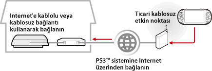

Ağ > Remote play'i kullanma (Internet yoluyla)
Remote play'i kullanma (Internet yoluyla)
Bu özelliği bir PS Vita sisteminde veya PSP™ sisteminde kullanmak için, PS3™ sisteminin ve PS Vita sisteminin veya PSP™ sisteminin yazılımını güncellemeniz gerekebilir.
Bir PS Vita sistemi veya PSP™ sistemi gibi Remote play'i destekleyen bir yazılım ve bir kablosuz erişim noktası kullanarak PS3™ sisteminize Internet yoluyla bağlanabilirsiniz. Remote play'i kullanmak için, remote play bağlantısı bekleme modunda PS3™ sisteminin ayarlanması gerekir.

İpucu
Ticari bir kablosuz etkin nokta (kablosuz LAN) hizmeti kullanma yöntemi ve bu tür kullanımın ücreti hizmet sağlayıcısına göre değişir. Ayrıntılar için, hizmet sağlayıcısı ile iletişime geçin.
Hazırlama (1) (PS3™ sistemi ve remote play'i destekleyen aygıt)
Remote play'i ilk kez kullanmak için, remote play'i destekleyen bir PS Vita veya PSP™ sistemi gibi bir aygıtı PS3™ sistemine kaydetmeniz (eşlemeniz) gerekir. Sistemi kaydetmek (eşlemek) için,  (Ayarlar) >
(Ayarlar) >  (Uzaktan Oynatma Ayarları) > [Cihazı Kaydet] öğesini seçin.
(Uzaktan Oynatma Ayarları) > [Cihazı Kaydet] öğesini seçin.
Hazırlama (2) (remote play'i destekleyen aygıt)
PS Vita veya PSP™ sistemini bir erişim noktasına bağlamak için bir ağ bağlantısı oluşturun. Remote play'i Internet yoluyla kullanmak için, bir kablosuz erişim noktası kullanabilirsiniz. Remote play'i destekleyen bir aygıtın ağ ayarları hakkında bilgi için, aygıtla verilen yönerge el kitabına bakın.
Remote play'i bir PS Vita sisteminde kullanma
1. |
PS3™ sisteminde, |
|---|
 (Ağ) >
(Ağ) >  (Uzaktan Oynatma) öğesini seçin.
(Uzaktan Oynatma) öğesini seçin.2. |
PS Vita sisteminizde, (PS3 Uzaktan Oynatma) > [Başlat] öğesine dokunun. |
|---|
3. |
[İnternet Üzerinden Bağlan] öğesine dokunun. |
|---|
İpuçları
- Remote play sırasında, farklı bir uygulamanın ekranına giderseniz, remote play bağlantısı 30 saniye sonra kapatılır.
- PS Vita sisteminizde, PS3™ sisteminde kullanılan Sony Entertainment Network hesabını bağlayın. PS Vita sisteminde veya bilgisayarda bir hesap oluşturduysanız, bu hesabı PS3™ sisteminde kullanabilirsiniz.
Remote play'i bir PSP™ sisteminde kullanma
1. |
PS3™ sisteminde, |
|---|---|
2. |
PSP™ sisteminde, |
3. |
[Connect via Internet] öğesini seçin. |
4. |
Bağlantılar listesinden, remote play için kullanılacak erişim noktasının bağlantısını seçin. |
5. |
Kullanılmakta olan hesabın Sony Entertainment Network oturum açma kimliği ve parolasını girin. |
 (Uzaktan Oynatma) öğesini seçin.
(Uzaktan Oynatma) öğesini seçin.Remote play'i Internet yoluyla kullanma
Kullanılmakta olan ağ aygıtına bağlı olarak remote play'i Internet yoluyla kullanamayabilirsiniz. Bu durunda aşağıdaki bilgileri kontrol edin.
- PSP™ sisteminin Internet'e ve PSNSM'e bağlanılabilirliğini kontrol etmek için (Ayarlar) altında
 (Ağ Ayarları) içinde [Internet Bağlantısı Testi] öğesini kullanın.
(Ağ Ayarları) içinde [Internet Bağlantısı Testi] öğesini kullanın. - Kullanılan yönlendirici UPnP özelliğini destekliyorsa, yönlendiricinin UPnP işlevini etkinleştirin.
- Kullanılan yönlendirici UPnP özelliğini desteklemiyorsa, PS3™ sistemine Internet'ten erişime izin vermek için yönlendiricinin bağlantı noktası yönlendirmesini ayarlamanız gerekir. Remote play'in kullandığı Bağlantı noktası numarası TCP: 9293'tür. Bu seçeneği ayarlama hakkında bilgi için, yönlendiricinin sağladığı yönergelere bakın.
- Bağlantı noktası yönlendirme, belirli bir bağlantı noktasına (giriş) gelen sinyalleri belirtilen başka bir bağlantı noktasına (çıkış) yönlendirmek için bir işlevdir. Bu, ayrıca "bağlantı noktası eşleme" veya "adres dönüştürme" olarak da bilinir.
- PS3™ sistemi Internet'e iki veya daha fazla yönlendiriciyle bağlanırsa, iletişim düzgün çalışmayabilir.
İpuçları
- Yönlendirici birden fazla aygıtın tek bir Internet hattını paylaşmasına izin veren bir aygıttır.
- İletişim, yönlendiricinin ve Internet servis sağlayıcısının sağladığı güvenlik işlevlerine bağlı olarak kısıtlanabilir. Kullanılan ağ aygıtıyla verilen yönergelere ve Internet servis sağlayıcınızın verdiği bilgilere bakın.